1. Introduction
In this lab, we implemented an 8-bit Arithmetic Logic Unit (ALU) to demonstrate the fundamental operations performed by the central processing unit of a computer. Our design showcases the versatility of digital circuits in performing both arithmetic and logical operations on binary data.
ALU Overview
Our 8-bit ALU takes two 8-bit inputs (A and B) and a 3-bit function code (F) to determine the operation. The ALU supports seven distinct operations:
- Arithmetic Operations: Addition (A + B), Subtraction (A - B), Set Less Than (SLT)
- Logical Operations: AND (A & B), OR (A | B), AND with inverted B (A & ~B), OR with inverted B (A | ~B)
2. ALU Design and Implementation
2.1 ALU Architecture
Our 8-bit ALU follows the standard design pattern with the following key components:
- Input Selection: F2 bit controls whether to use B or ~B as input to the adder
- Adder Unit: 8-bit full adder for arithmetic operations
- Logic Gates: AND and OR gates for logical operations
- Output Multiplexer: 4-input multiplexer selects the appropriate output based on function code
- SLT Logic: Uses the most significant bit of the adder output, zero-extended to 8 bits
2.2 Function Code Mapping
| F2F1F0 |
Function Code |
Operation |
Description |
| 000 |
0 |
A & B |
Bitwise AND |
| 001 |
1 |
A | B |
Bitwise OR |
| 010 |
2 |
A + B |
Addition |
| 100 |
4 |
A & ~B |
AND with inverted B |
| 101 |
5 |
A | ~B |
OR with inverted B |
| 110 |
6 |
A - B |
Subtraction |
| 111 |
7 |
SLT |
Set Less Than |
3. Comprehensive Testing and Simulation
3.1 Test Strategy
We systematically tested all seven ALU functions using various input combinations to ensure comprehensive validation of our design. Each function was tested with multiple input values to verify correctness across different scenarios.
3.2 Function-by-Function Testing
Function 000: A & B (Bitwise AND)
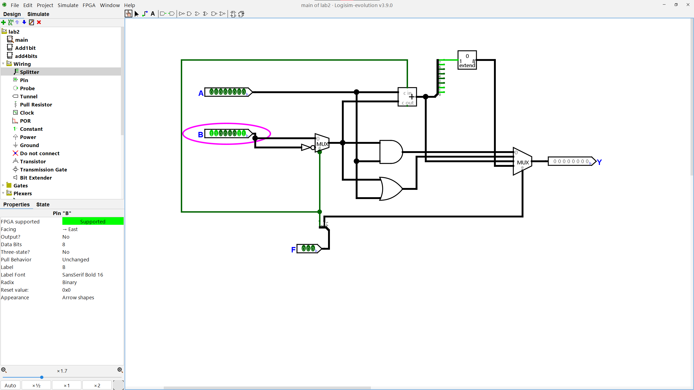
Figure 1: A & B operation with test inputs
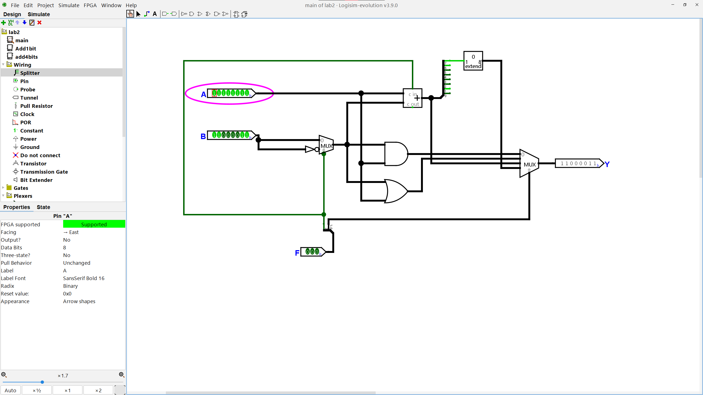
Figure 2: A & B operation showing bitwise AND result
Figure 3: A & B operation final result
Function 001: A | B (Bitwise OR)
Figure 4: A | B operation with test inputs
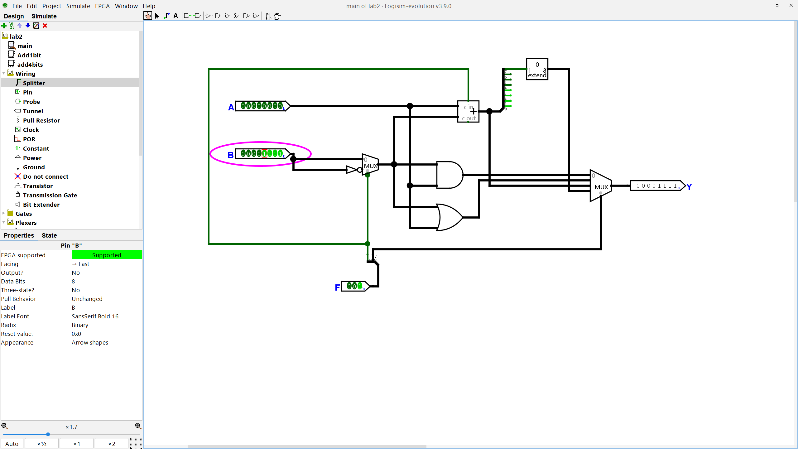
Figure 5: A | B operation showing bitwise OR result
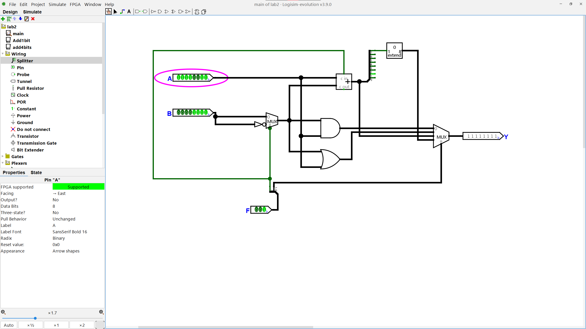
Figure 6: A | B operation final result
Function 010: A + B (Addition)
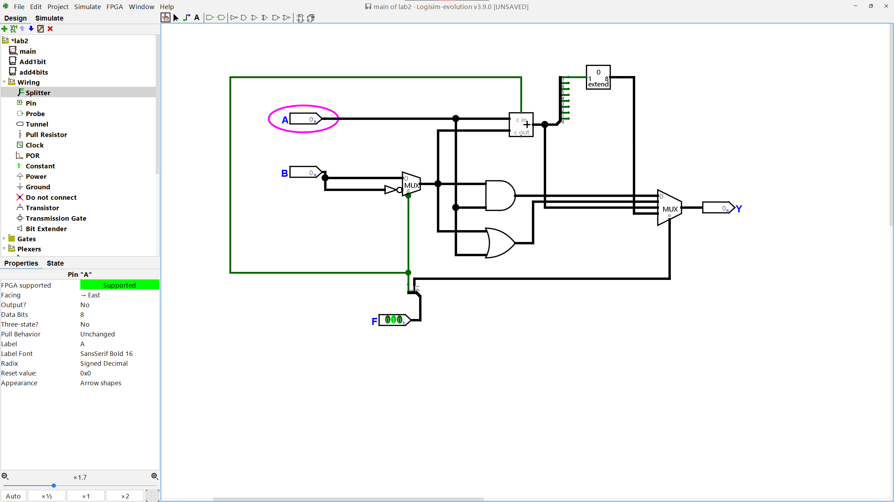
Figure 7: A + B operation with test inputs
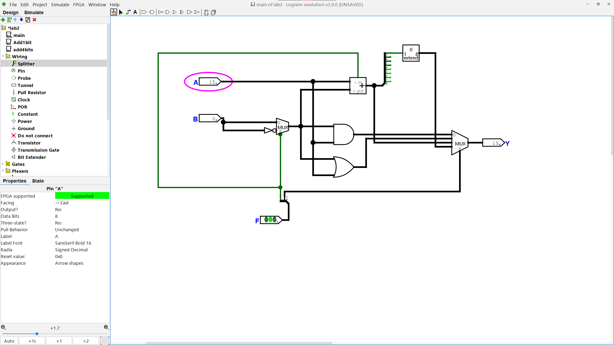
Figure 8: A + B operation showing addition result
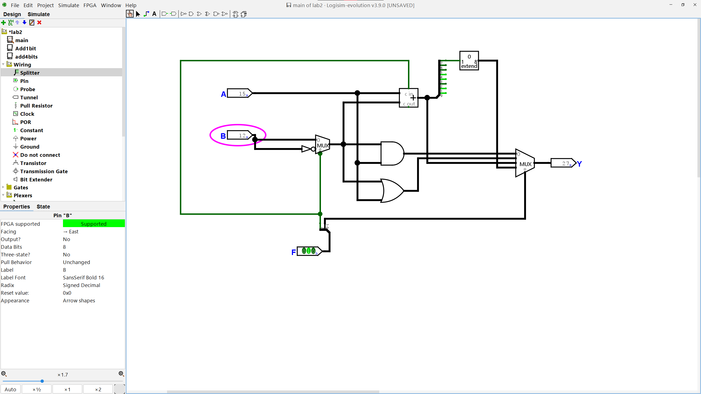
Figure 9: A + B operation intermediate step
Figure 10: A + B operation final result
Function 100: A & ~B (AND with inverted B)
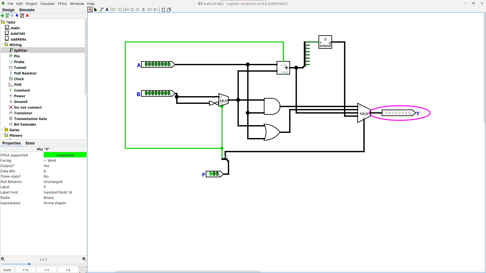
Figure 11: A & ~B operation with test inputs
Figure 12: A & ~B operation showing result
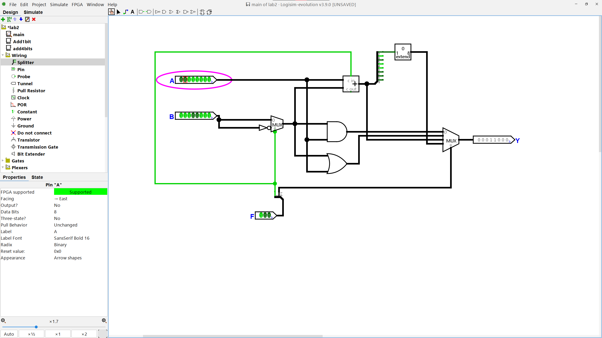
Figure 13: A & ~B operation final result
Function 101: A | ~B (OR with inverted B)
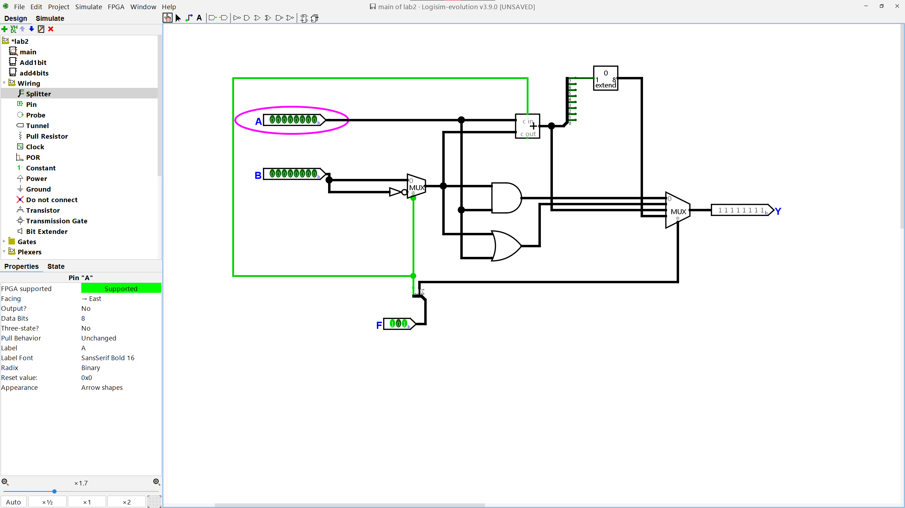
Figure 14: A | ~B operation with test inputs
Figure 15: A | ~B operation showing result
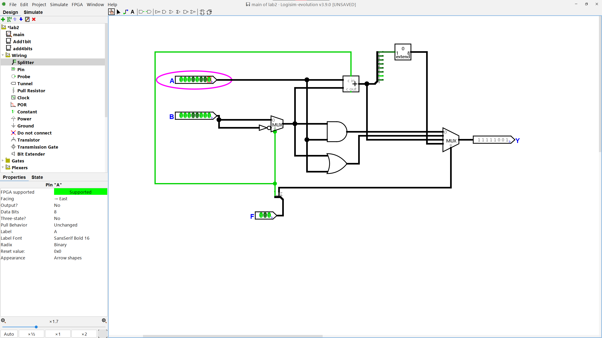
Figure 16: A | ~B operation final result
Function 110: A - B (Subtraction)
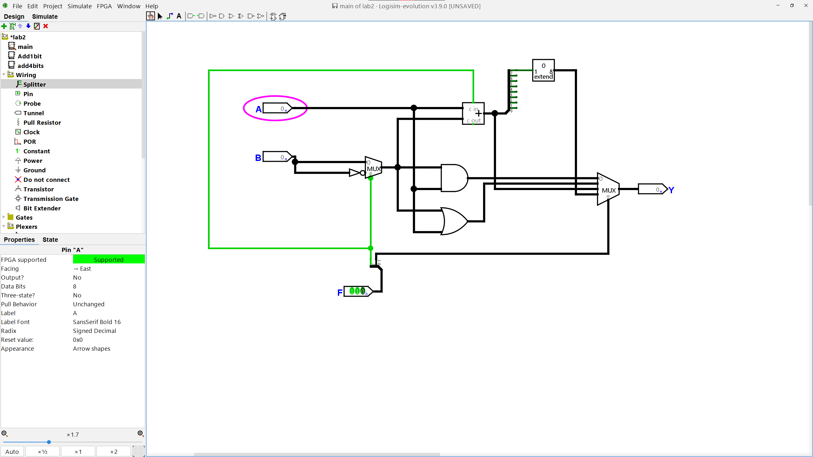
Figure 17: A - B operation with test inputs
Figure 18: A - B operation showing subtraction result
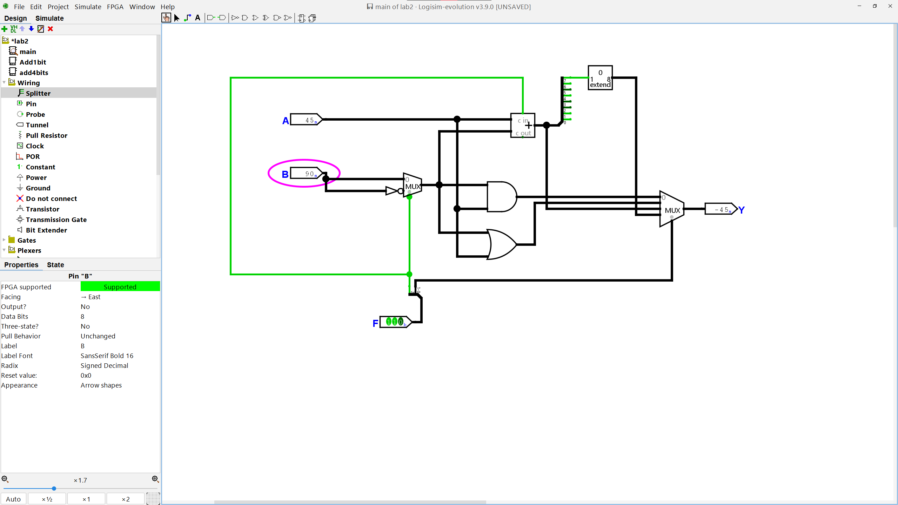
Figure 19: A - B operation intermediate step
Figure 20: A - B operation final result
Function 111: SLT (Set Less Than)
Figure 21: SLT operation with test inputs
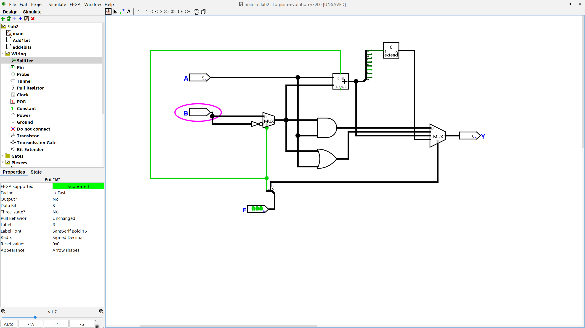
Figure 22: SLT operation showing comparison result
Figure 23: SLT operation intermediate step
Figure 24: SLT operation showing MSB extraction
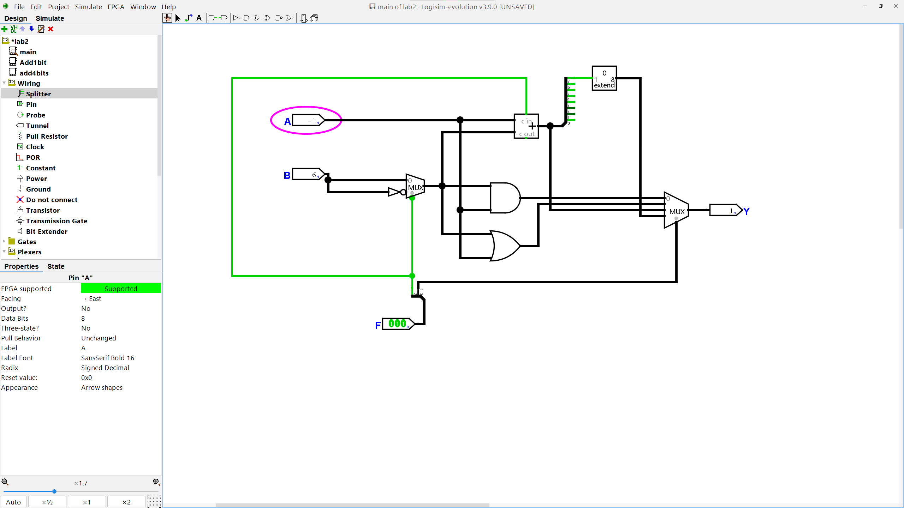
Figure 25: SLT operation final result with zero extension
3.3 Completed ALU Schematic
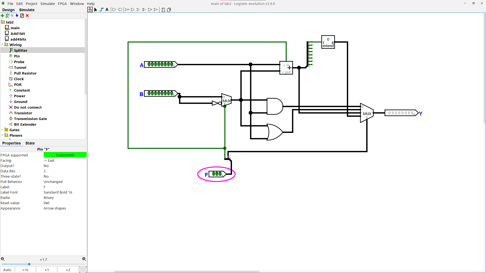
Figure 26: Complete 8-bit ALU schematic showing all components and interconnections
4. Lab Questions and Analysis
Question 1: Why are there always three function bits regardless of the size of the inputs and outputs?
The number of function bits (3) is determined by the number of distinct operations the ALU can perform, not by the width of the data inputs and outputs. Here's why three function bits are sufficient and necessary:
- Operation Count: Our ALU supports 7 distinct operations (A&B, A|B, A+B, A&~B, A|~B, A-B, SLT), which requires at least 3 bits to encode (2³ = 8 possible combinations, with one unused).
- Independence from Data Width: The function code determines what operation to perform, while the data width determines how many bits the operation works on. These are orthogonal concerns.
- Standardization: Using a fixed number of function bits (3) allows for consistent instruction encoding across different processor architectures, regardless of whether the ALU operates on 8-bit, 16-bit, 32-bit, or 64-bit data.
- Efficiency: Three bits provide a good balance between the number of supported operations and instruction encoding efficiency. Adding more function bits would increase instruction size without necessarily adding useful operations.
- Hardware Simplicity: A 3-bit function code can be decoded using a simple 3-to-8 decoder, making the control logic straightforward and efficient.
Question 2: Is it feasible to test every possible combination of inputs for an 8-bit ALU? Is it more or less difficult for a 32-bit ALU?
Testing every possible combination of inputs becomes exponentially more difficult as the data width increases:
- 8-bit ALU Analysis:
- Total input combinations: 2⁸ × 2⁸ = 2¹⁶ = 65,536 combinations per function
- For 7 functions: 7 × 65,536 = 458,752 total test cases
- Feasibility: While computationally intensive, this is technically feasible with automated testing tools and sufficient time.
- 32-bit ALU Analysis:
- Total input combinations: 2³² × 2³² = 2⁶⁴ ≈ 1.84 × 10¹⁹ combinations per function
- For 7 functions: 7 × 2⁶⁴ ≈ 1.29 × 10²⁰ test cases
- Feasibility: Completely infeasible with current technology. Even at 1 billion tests per second, it would take approximately 4.09 × 10¹⁰ years to complete.
- Exponential Growth: The difficulty increases exponentially: 32-bit testing is 2⁴⁸ times more difficult than 8-bit testing.
- Practical Implications: This exponential growth is why exhaustive testing is only practical for small circuits, and why more sophisticated testing strategies (equivalence classes, boundary value testing, random testing) are essential for larger systems.
Question 3: What do you think is the best approach for testing a 32-bit ALU design?
Given the infeasibility of exhaustive testing for a 32-bit ALU, the best approach combines multiple testing strategies:
- Equivalence Class Testing:
- Test representative values from different ranges (small positive, large positive, small negative, large negative)
- Include boundary values (0, -1, 2³¹-1, -2³¹)
- Test special cases (all zeros, all ones, alternating patterns)
- Functional Testing by Operation:
- Arithmetic operations: Test overflow, underflow, and normal cases
- Logical operations: Test with various bit patterns to ensure proper bitwise behavior
- SLT operation: Test with positive/negative combinations and edge cases
- Random Testing:
- Generate thousands of random input pairs for each function
- Use statistical analysis to ensure good coverage
- Focus on corner cases that might be missed by systematic testing
- Formal Verification:
- Use mathematical proofs to verify correctness for all possible inputs
- Model checking to verify properties hold for all states
- Theorem proving for critical correctness properties
- Property-Based Testing:
- Define properties that should hold for all inputs (e.g., commutativity of addition)
- Use automated tools to generate test cases that violate these properties
- Verify that the ALU maintains these properties across all test cases
- Simulation and Emulation:
- Use high-level language simulations to generate expected results
- Compare ALU outputs with known-correct reference implementations
- Use FPGA emulation for hardware-in-the-loop testing
Recommended Strategy: Combine equivalence class testing (for systematic coverage), random testing (for unexpected cases), and formal verification (for mathematical certainty) to achieve comprehensive validation while remaining computationally feasible.
5. Troubleshooting and Challenges
During our implementation and testing of the 8-bit ALU, we encountered several challenges and resolved them:
- Multiplexer Configuration: Initially, we had difficulty configuring the 4-input multiplexer to properly select outputs based on the function code. We resolved this by carefully mapping the function bits to the multiplexer select inputs.
- SLT Implementation: The Set Less Than operation required careful implementation of the MSB extraction and zero extension. We had to ensure the bit extender was configured correctly to zero-extend the single MSB to an 8-bit output.
- Subtraction Logic: Implementing subtraction using two's complement required proper configuration of the F2 bit to control both the B input inversion and the carry-in to the adder.
- Input/Output Configuration: Setting the correct radix (binary) for all input and output pins was crucial for proper simulation and result interpretation across all test cases.
- Simulation Timing: Understanding when to pause, reset, and step through the simulation for each function required careful coordination to capture meaningful screenshots.
- Wire Management: With 8-bit data paths and multiple components, keeping the circuit organized and readable required careful planning of wire routing and component placement.
6. Conclusion
This lab successfully demonstrated the implementation of a comprehensive 8-bit ALU capable of performing both arithmetic and logical operations. Key achievements include:
- ✓ Correct implementation of all seven ALU functions using standard digital logic components
- ✓ Successful integration of arithmetic and logical operations in a single, unified design
- ✓ Comprehensive testing and verification of all ALU functions with multiple test cases
- ✓ Proper handling of two's complement arithmetic for addition and subtraction operations
- ✓ Correct implementation of the SLT operation using MSB extraction and zero extension
- ✓ Understanding of ALU design principles and their application in processor architecture
The ALU correctly performs all seven operations as specified, demonstrating proper binary arithmetic, logical operations, and comparison functionality. The comprehensive testing approach validates the correctness of our implementation across various input combinations, providing confidence in the design's reliability and functionality.
This lab provided valuable insight into the fundamental building blocks of computer processors and the complexity involved in designing arithmetic and logical units that can handle multiple operations efficiently.